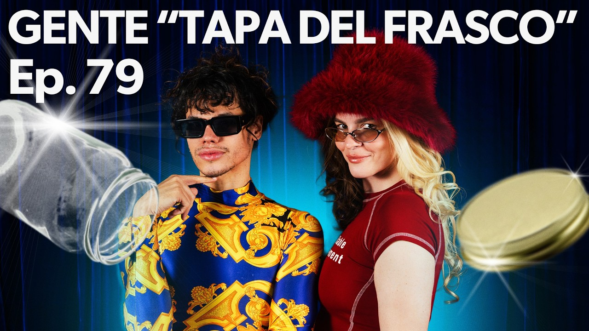
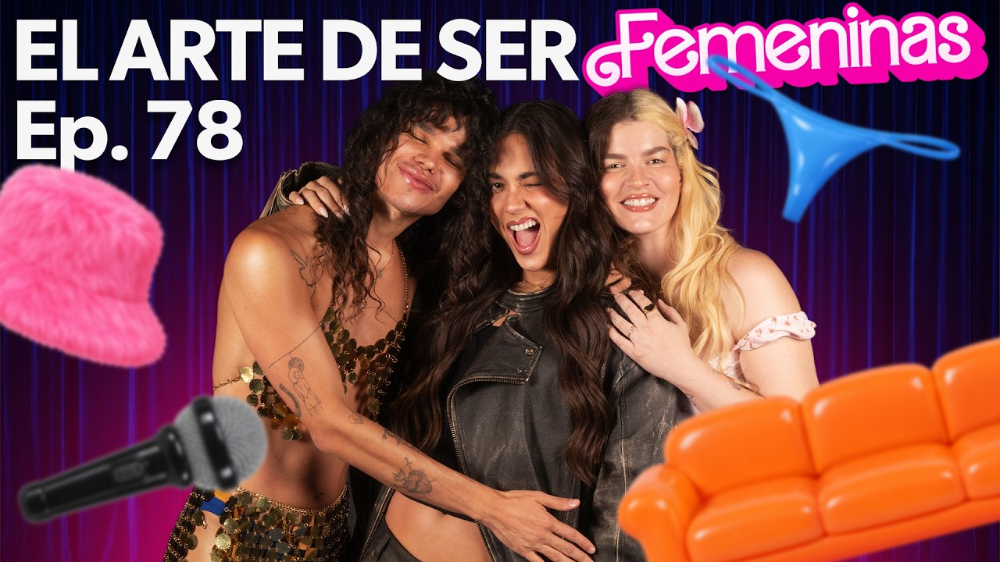

EL PODCAST QUE DICE LO QUE PIENSA
Aquí venimos
a joder.
Chismes, humor, anécdotas y verdades incómodas con Gaby Noya y Tonny Boom. Ponte cómoda: esto va sin filtro.
🎙️ GABY + TONNYEPISODIOS NUEVOS EN YOUTUBE

NO HAY
FILTRO ✳
EL SHOW QUE NO SABÍAS QUE NECESITABAS ↗
FILTRO ✳
EN ABIERTO · YOUTUBE
Ver canal completo ↗
Dale play al chisme.
EL LADO SIN CENSURA
Lo bueno pasa después del episodio.
El espacio para quienes quieren quedarse un rato más: episodios completos y contenido exclusivo para la comunidad.
✳ Episodios completos✳ Tras cámaras✳ Bloopers y más
ACCESO A LA COMUNIDAD✳
NOJODACLUB✦
Una comunidad. Dos formas de entrar.
Ya estoy en Patreon ↗ La suscripción directa en esta web es una vista conceptual del mockup.
SIN PELOSEN LA LENGUA
¿QUIÉNES SON?Mucho cuento.
Mucho cuento.
Cero filtro.
Gaby Noya y Tonny Boom son dos amigos expertos en decir lo que piensan. Entre risas, chisme y anécdotas, hacen de cada episodio una conversación en la que te quieres quedar.
Síguelos en Instagram @nojodachica ↗